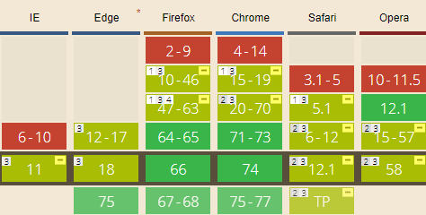
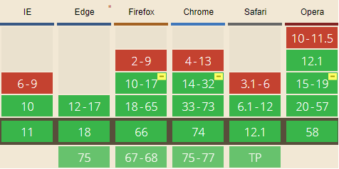
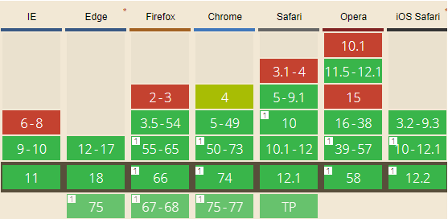
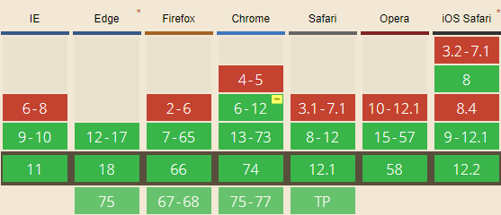

INTEGRANTES
Libério Afonso Geraldo Cardoso da Silva

Guilherme Lucas Medeiros de Miranda
Estamos cursando a disciplina de desenvolvimento WEB do CEFET-MG, somos amigos do Sr.Fegeno e vamo ajuda-lo a compor
a música: “Os Ataques Potencialmente Irresponsáveis do Agáte Êmi-Éli, o Quinto” para tocarmos aqui na taverna
“O Olho do Beholder”. Como contribuição para a musica estamos trazendo 4 histórias importantes sobre o reino de Weblot
esperamos que o Sr.Fegeno goste e nos retribua com PW$ suficientes para sermos aprovados na disciplina:
Para embarcar nessa aventura e conhecer mais sobre nossas histórias basta navegar no menu do lado esquerdo da página.
FullScreen API
A FullScreen API fornece uma maneira fácil para o conteúdo da web para ser apresentado usando a tela inteira
do usuário.
O exemplo a seguir mostra como você pode colocar um vídeo com id="myvideo" no modo fullscreen:
var elem = document.getElementById("myvideo");
if (elem.requestFullscreen) {
elem.requestFullscreen();
} else if (elem.msRequestFullscreen) {
elem.msRequestFullscreen();
} else if (elem.mozRequestFullScreen) {
elem.mozRequestFullScreen();
} else if (elem.webkitRequestFullscreen) {
elem.webkitRequestFullscreen();
}
Compatibilidade

FullScreen Example
Page Visibility API
A API de visibilidade de página deixa você saber quando uma página da web está visível ou em foco. Com a
navegação em abas, existem razões para que quaisquer páginas da web que estejam sendo executadas em segundo
plano e não visíveis para o usuário. Quando o usuário minimiza a página ou muda para outra aba, a API
envia um evento visibilitychange informando o estado de visibilidade da página. Você pode detectar o evento
e realizar algumas ações ou modificar o seu comportamento. Por exemplo, se a sua aplicação web estiver
reproduzindo um video, ela pode pausar durante o momento que o usuário estiver olhando para outra aba,
e reproduz novamente quando o usuário retorna para a aba. O usuário não perde nenhuma parte do video e
pode continuar assistindo.
O exemplo, que pausa o video quando você troca para outra aba e volta a reproduzir quando você retorna, foi
criado com o seguinte código:
// Configura o nome da propriedade hidden e o evento de mudança para visibilidade
var hidden, visibilityChange;
if (typeof document.hidden !== "undefined") { // Suporte para Opera 12.10 e Firefox 18 em diante
hidden = "hidden";
visibilityChange = "visibilitychange";
} else if (typeof document.mozHidden !== "undefined") {
hidden = "mozHidden";
visibilityChange = "mozvisibilitychange";
} else if (typeof document.msHidden !== "undefined") {
hidden = "msHidden";
visibilityChange = "msvisibilitychange";
} else if (typeof document.webkitHidden !== "undefined") {
hidden = "webkitHidden";
visibilityChange = "webkitvisibilitychange";
}
var videoElement = document.getElementById("videoElement");
// Se a página está escondida, pausa o video;
// Se a página está visível, reproduz o video
function handleVisibilityChange() {
if (document[hidden]) {
videoElement.pause();
} else {
videoElement.play();
}
}
// Alerta se o navegador não suporta addEventListener ou a API de visibilidade da página
if (typeof document.addEventListener === "undefined" ||
typeof document[hidden] === "undefined") {
alert("This demo requires a browser, such as Google Chrome or Firefox, that supports the Page Visibility API.");
} else {
// Manipula o evento de mudança da visibilidade da página
document.addEventListener(visibilityChange, handleVisibilityChange, false);
// Reverte para o favicon existente para o site quando a página é fechada;
// caso contrário, o favicon continua como paused.png
window.addEventListener("unload", function(){
favicon.change("/favicon.ico");
}, false);
// Quando o video é pausado, configura o favicon.
// Isso mostra a imagem paused.png
videoElement.addEventListener("pause", function(){
favicon.change("images/paused.png");
}, false);
// Quando o video é reproduzido, configura o favicon.
videoElement.addEventListener("play", function(){
favicon.change("images/playing.png");
}, false);
// Configura o título da aba com o tempo atual do video
videoElement.addEventListener("timeupdate", function(){
document.title = Math.floor(videoElement.currentTime) + " segundo(s)";
Compatibilidade

Page Visibility Example
Geolocation API
A interface Geolocation representa um objeto ábil de programaticamente obter a posição do
aparelho. Dá ao conteúdo web acesso à localização do aparelho. Isto permite com que o
website ou a aplicação ofereça resultados customizados baseados na localização do usuário.
O exemplo a seguir irá fazer a função the do_something() executar quando a localização for obtida:
navigator.geolocation.getCurrentPosition(function(position) {
do_something(position.coords.latitude, position.coords.longitude);
});
Compatibilidade

Geolocation API Example
Navigation Timming API
A API Navigation Timing fornece dados que podem ser usados para medir a performance de um website. Diferente de outros
mecanismos baseados em Javascript que já foram usados para o mesmo propósito, esta API pode fornecer dados sobre
a latência do começo ao fim que podem ser mais precisas e relevantes.
O exemplo a seguir mostra como você pode medir o tempo de carregamento percebido:
function onLoad() {
var now = new Date().getTime();
var page_load_time = now - performance.timing.navigationStart;
console.log("Tempo de carregamento percebido pelo usuário: " + page_load_time);
}
Compatibilidade

Navigation Timming Example